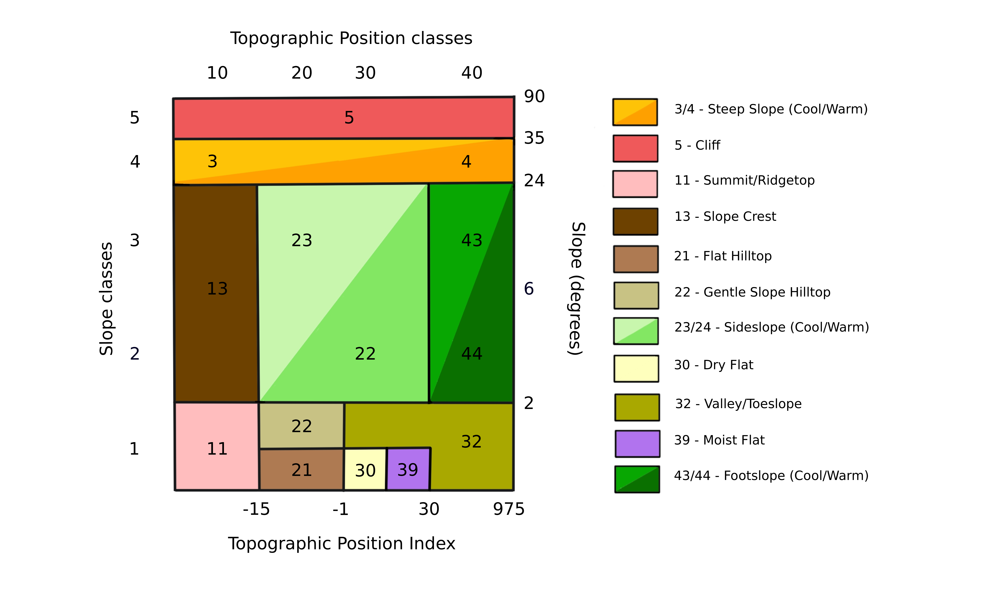

Heterogeneidade da paisagem
A heterogeneidade da paisagem é uma métrica composta pelas médias de Z-scores das variáveis variedade de formas de relevo, amplitude altitudinal, índice de áreas úmidas e riqueza de solos. A métrica é composta por uma média hierárquica dessas diferentes variáveis (Figura). A seguir, descreveremos como cada variável que compõe a métrica é criada e como elas são combinadas para formar a heterogeneidade da paisagem.
As análises de heterogeneidade da paisagem foram realizadas no Google Earth Engine (Gorelick et al. 2017).
Bases de dados utilizadas
Nós utilizamos o modelo digital de elevação (DEM) do Merit-DEM (Yamazaki et al. 2017), na escala de 90 m, como base para os cálculos de terreno como declividade, orientação do relevo e índice de posição topográfica (TPI). Esse DEM é um produto em escala global, permitindo a replicabilidade das análises em outras regiões, e possui correções de vários vieses derivados de imagens de satélite, principalmente em áreas com alta densidade de florestas como a floresta Amazônica. Além disso, o Merit-DEM já possui uma camada de acúmulo de fluxo, em escala global, disponível no Merit-Hydro (Yamazaki et al. 2019). Essa camada de acúmulo de fluxo possui correções para áreas planas e para o efeito da densidade de árvores no cálculo da rede hidrográfica (Yamazaki et al. 2019), que são importantes para a análise de florestas tropicais com alta densidade de árvores.
O acúmulo de fluxo não captura bem a distribuição e área de lagos e rios largos como o rio Amazonas. Desta forma, nós incluímos a classe 33 do MapBiomas Coleção 7 (MapBiomas Project 2020), que representa os rios e lagos para complementar as informações sobre as áreas úmidas. O MapBiomas é um projeto nacional de mapeamento e classificação de mudanças do uso do solo dos últimos 30 anos, a partir de dados de sensoriamento remoto.
Variáveis que compõem a heterogeneidade da paisagem
Variedade de formas de relevo (landforms)
A variedade de formas de relevo (landforms) é a representada pela quantidade de formas de relevo dentro de uma vizinhança da célula focal. Primeiro classificamos as formas de relevo e em seguida contabilizamos a quantidade de formas no entorno de cada célula.
As formas de relevo representam a variação na umidade, exposição à radiação solar, velocidade de ventos e deposição de sedimentos na paisagem (Dobrowski 2011, Anderson et al. 2016). Essa classificação é determinada pelas variáveis de declividade do relevo (slope), orientação do relevo (aspect), índice de posição topográfica (topographic position index), índice de umidade (moisture index) e distribuição de rios e lagos, descritas em detalhes abaixo.
A combinação dessas variáveis permite identificar os topos de montanhas e vales, áreas íngremes ou planas, orientação do relevo com mais sombra ou incidência solar, áreas secas ou úmidas dado o acúmulo de fluxo, declividade do relevo e a presença de lagos e rios (Figura 1). A classificação foi baseada em estudos anteriores (Fels e Matson 1996, Anderson et al. 2012, 2014, 2016, 2023) conduzidos para a América do Norte ( https://crcs.tnc.org/pages/land).
A análise conduzida no presente estudo apresentou algumas modificações com relação aos estudos anteriores. O cálculo da posição topográfica foi substituído entre o landscape position index (LPI) (Anderson et al. 2012) pelo topographic position index (Weiss 2001). Além disso, a orientação do relevo (faces quentes ou frias) foi ajustada para o Hemisférios Sul. Por fim, a classificação das formas de relevo foi ajustada para valores de TPI e índice de umidade que melhor classificavam as formas de relevo das paisagens analisadas.

Declividade do relevo (slope)
A declividade do relevo foi calculada pela função ee.Terrain.slope, como um gradiente local das 4 células adjacentes. Os resultados são apresentados em graus de declividade (0º a 90º).
Orientação do relevo (aspect)
A orientação do relevo foi calculada pela função ee.Terrain.aspect, como um gradiente local das 4 células adjacentes. Os resultados são apresentados em graus da direção do relevo (0º = Norte, 90º = Leste, 180º = Sul e 270º = Oeste). Nós dividimos a orientação do relevo em dois grupos, baseados na quantidade de incidência solar, sendo células com valores entre 90º e 270º classificados como faces frias e valores entre 0º a 90º e 270º a 360º, classificados como faces quentes.
Índice de posição topográfica (TPI)
O cálculo do TPI foi feito em três escalas com uma janela circular com 7, 11 e 15 células de raio, calculando a soma da diferença da elevação da célula focal para as suas vizinhas (\(i\)), divididos pelo número de células vizinhas (\(n\)).
\[ TPI = \frac {\sum _{i}^{n}\left(vizinhança_i - focal \right)}{n} \]
O índice é composto pela média de TPI das três escalas, o que permite a consideração de níveis locais e regional de resolução da paisagem (Theobald et al. 2015). Essa abordagem foi implementada para permitir a classificação de formas de relevo que emergem tanto em escalas locais (ex. vales, topos de montanhas) quanto regionais (ex. topos planos de chapadas) (Fels e Matson 1996). Os tamanhos das janelas foram ajustados visualmente para que representassem as formas de relevo.
Índice de umidade (moisture index)
O índice de umidade (moisture index) foi calculado com base no acúmulo de fluxo do Merit-Hydro e na declividade do relevo calculadas anteriormente.
\[ moisture.index = \frac{\log \left(fluxo+1\right)}{\left(slope+1\right)} \times1000 \] Após o cálculo do índice de umidade para cada célula, suavizamos o padrão de distribuição da rede de drenagem como a média do índice dentro de uma janela circular com uma célula de raio.
Transformando os índices em classes
Cada índice (declividade e orientação do relevo, TPI e índice de úmidade) foi transformado em classes (Tabela 1) para formarem os tipos de formas de relevo. A declividade e orientação do relevo seguiram a classificação em Anderson et al. (2016), com a orietação do relevo ajustada para o Hemisfério Sul. Os ajustes dos limiares de TPI e índice de umidade foram definidos visualmente. Classificamos como áreas úmidas somente células com índice de umidade acima de 3000, uma vez que valores menores superestimavam a distribuição de corpos d’água em áreas planas. Depois combinamos o mapa de áreas úmidas com o de água e lagos do MapBiomas.
| Variáveis | Classes | Limiar inferior | Limiar superior |
|---|---|---|---|
| Declividade do relevo | 1 | -1 | 2 |
| Declividade do relevo | 2 | 2 | 6 |
| Declividade do relevo | 3 | 6 | 24 |
| Declividade do relevo | 4 | 24 | 35 |
| Declividade do relevo | 5 | 35 | 90 |
| TPI | 1 | -Inf | -15 |
| TPI | 2 | -15 | -1 |
| TPI | 3 | -1 | 30 |
| TPI | 4 | 30 | 975 |
| Orientação | 2 | 0 | 90 |
| Orientação | 1 | 90 | 270 |
| Orientação | 2 | 270 | 360 |
| Índice de Umidade | 0 | -Inf | 30000 |
| Índice de Umidade | 1 | 3000 | Inf |
Combinando as variáveis e classificando as formas de relevo
As classes de cada variável foram combinadas para representar as formas de relevo como um código numérico (Figura 2): + índice de umidade foi multiplicado por 1000; + orientação do relevo foi multiplicado por 100; + TPI foi multiplicado por 10; + declividade do relevo foi multiplicado por 1.
Por exemplo, o código 11 (0011) representa a primeira classe de declividade (áreas de baixa declividade) e a primeira classe de TPI (posição do relevo mais alta que o entorno), sendo, portanto, um topo de montanha (summit). No entanto, alguns códigos tiveram que ser inspecionados visualmente para classificar apropriadamente alguns tipos de formas de relevo, como por exemplo sideslopes, valleys e toeslopes (Tabela 2).

| Valores da Combinação | Código para Formas de Relevo |
|---|---|
| 10 | 11 |
| 11 | 11 |
| 12 | 11 |
| 13 | 13 |
| 14 | 11 |
| 15 | 5 |
| 20 | 21 |
| 21 | 21 |
| 22 | 22 |
| 23 | 24 |
| 24 | 24 |
| 25 | 5 |
| 31 | 30 |
| 32 | 32 |
| 33 | 24 |
| 34 | 24 |
| 35 | 5 |
| 40 | 32 |
| 41 | 32 |
| 42 | 32 |
| 43 | 43 |
| 44 | 3 |
| 45 | 5 |
| 51 | 51 |
| 111 | 11 |
| 112 | 11 |
| 113 | 13 |
| 114 | 3 |
| 115 | 5 |
| 121 | 21 |
| 122 | 22 |
| 123 | 23 |
| 124 | 3 |
| 125 | 5 |
| 131 | 30 |
| 132 | 32 |
| 133 | 23 |
| 134 | 3 |
| 135 | 5 |
| 141 | 32 |
| 142 | 32 |
| 143 | 43 |
| 144 | 3 |
| 145 | 5 |
| 151 | 51 |
| 211 | 11 |
| 212 | 11 |
| 213 | 13 |
| 214 | 4 |
| 215 | 5 |
| 221 | 21 |
| 222 | 22 |
| 223 | 24 |
| 224 | 4 |
| 225 | 5 |
| 231 | 30 |
| 232 | 32 |
| 233 | 24 |
| 234 | 4 |
| 235 | 5 |
| 241 | 32 |
| 242 | 32 |
| 243 | 44 |
| 244 | 4 |
| 245 | 5 |
| 251 | 51 |
| 1000 | 39 |
A classificação final de formas de relevo pode ser visualizada na Tabela 3.
| Códigos | Nomes |
|---|---|
| 3 | Cool Steep Slope |
| 4 | Warms Steep Slope |
| 5 | Cliff |
| 11 | Summit/Ridgetop |
| 13 | Slope Crest |
| 21 | Flat Hilltop |
| 22 | Gentle Slope Hilltop |
| 23 | Cool Sideslope |
| 24 | Warm Sideslope |
| 30 | Dry Flats |
| 32 | Valley/Toeslope |
| 39 | Moist Flats |
| 43 | Cool Footslope |
| 44 | Warm Sideslope |
Obtendo a variedade de formas de relevo
A variedade de formas de relevo foi calculada como a quantidade de tipos de formas de relevo dentro de uma janela circular da célula focal. O tamanho do raio da janela foi definido calculando a variedade em diferentes raios (2, 5, 7, 10, 15, 20 células) e calculando a diferença na média de variedade obtido para o Brasil a cada aumento de raio. O raio escolhido foi aquele em que o seu subsequente não adicionou variedade. Desta forma, o raio representa o nível de resolução da paisagem que captura o máximo de variedade de formas de relevo. O raio escolhido foi de 5 células de raio (450 m) para todo o Brasil.
Amplitude altitudinal
A amplitude altitudinal representa a variação da altitude em uma região, independente da variedade de formas de relevo. A amplitude altitudinal foi calculada como a diferença entre os valores máximos e mínimos de altitude, dentro de uma janela circular de 450 m (5 células de raio), a partir do MERIT-DEM (Yamazaki et al. 2017). Em seguida, fizemos uma Regressão Linear Simples (Ordinary Linear Regression) entre os valores de amplitude altitudinal e a variedade formas de relevo e obtivemos os valores dos resíduos dessa análise como a amplitude altitudinal independente da variedade de formas de relevo.
Índice de áreas úmidas
O índice de áreas úmidas foi calculado a partir dos dados da Global Wetlands Database (Gumbricht et al. 2017). Essa base de dados fornece informação e inventário de áreas úmidas para todo o mundo. Os dados são obtidos através de imagens de satélite, amostragens aéreas e relatórios publicados. No presente estudo, reamostramos o mapa de áreas úmidas para a mesma resolução das demais variáveis. Depois, calculamos o índice de áreas úmidas considerando a densidade de áreas úmidas na escala local (450 m) e na escala regional (1170 m). Também foi incluído no índice final a quantidade de áreas úmidas regional (Anderson et al. 2016).
Primeiro, calculamos a quantidade de áreas úmidas como o número de células de áreas úmidas dentro de uma janela local (450 m) e regional (1170 m). A divisão da quantidade de áreas úmidas pelo número de células na janela produz a densidade de áreas úmidas. Em seguida, as densidades de áreas úmidas local e regional e a quantidade de áreas úmidas regional foram transformados em Z-scores. Cada célula focal (\(X_{célula}\)) foi subtraída pela média da vizinhança (\(\mu\)) e dividida pelo desvio padrão (\(\sigma\)) da vizinhança. A média e desvio padrão foram calculados dentro de uma vizinhança circular de 200 células de raio de cada célula focal.
\[ Z_{célula}= \frac {X_{célula}-\mu_{vizinhança}} {\sigma_{vizinhança}} \]
O índice de áreas úmidas foi calculado como a média ponderada da densidade local e regional, atribuindo peso 2 para a densidade local:
\[ Z_{índice\,de\,áreas\,úmidas}=\frac {{{(Z_{local}}{\times2)}}+{Z_{regional}}}{3} \]
Nos locais onde a quantidade de áreas úmidas regionais (Z-score) eram maiores que o índice de áreas úmidas, o índice foi calculado como a média ponderada das densidades e da quantidade de áreas úmidas:
\[ Z_{índice\,de\,áreas\,úmidas} =\frac {{{(Z_{local}}{\times2)}} + {Z_{regional}} + {Z_{quantidade}}}{4} \]
Riqueza de solos
A riqueza de solos foi calculada como a quantidade de tipos de solos dominantes e sub-dominantes nos polígonos de solo obtidos da base do Instituto Brasileiro de Geografica e Estatística (IBGE) (https://www.ibge.gov.br/geociencias/informacoes-ambientais/pedologia/10871-pedologia.html). Essa informação foi rasterizada e projetada na mesma resolução espacial das variáves descritas anteriormente.
Padronização das variáveis
A transformação de Z-score foi aplicada também para a variedade de formas de relevo, amplitude altitudinal e riqueza de solos para compormos a heterogeneidade da paisagem.
Heterogeneidade da paisagem: combinação das variáveis
A heterogeneidade da paisagem é calculada seguindo uma hierarquia nas variáveis. Na etapa 1, ela é definida inicialmente como o valor de Z da variedade de formas de relevo. Na etapa 2, em locais onde o valor de Z para amplitude altitudinal é maior que aquele obtido para a variedade de formas de relevo, a heterogeneidade da paisagem é calculada como a média ponderada das duas variáveis, dando peso 2 para variedade de formas de relevo. \[ Z_{heterogeneidade\, da\,paisagem}= \frac{\left(Z_{variedade\,de\,landforms}\times 2 \right)+Z_{amplitude\,altitudinal}}{3} \] Na etapa 3, em locais onde o índice áreas úmidas é maior que a heterogeneidade da paisagem calculada na etapa 2, calculamos a média ponderada da heterogeneidade da paisagem e índice de áreas úmidas, atribuindo peso dois para as áreas úmidas. O peso duplo das áreas úmidas é justificado por esses locais estarem em áreas planas com baixa variabilidade topográfica, sendo as áreas úmidas locais com alta disponibilidade hídrica que determinam a variabilidade microclimática.
\[ Z_{heterogeneidade\, da\,paisagem}= \frac{Z_{variedade\,de\,landforms}+Z_{amplitude\,altitudinal} + (Z_{índice\,de\,áreas\,úmidas}\times 2)}{4} \]
Se, na etapa 2, a amplitude altitudinal não foi importante para a célula, a heterogeneidade da etapa 3 é calculada conforme segue:
\[ Z_{heterogeneidade\, da\,paisagem}= \frac{Z_{variedade\,de\,landforms} + (Z_{índice\,de\,áreas\,úmidas}\times 2)}{3} \]
Na etapa 4, nos locais onde o valor de Z da riqueza de solos é maior que a heterogeneidade da paisagem calculada na etapa 3, os valores são substituídos pela média ponderada das variáveis naquela localidade, com peso 2 para variedade de formas de relevo.
\[ Z_{heterogeneidade\, da\,paisagem}= \frac{(Z_{variedade\,de\,landforms}\times 2)+Z_{amplitude\,altitudinal}+Z_{índice\,de\,áreas\,úmidas}+Z_{diversidade\,de\,solos}}{5} \]
Se, na etapa 3, nas células onde o índice de áreas úmidas não foi importante, a heterogeneidade da paisagem é calculada conforme segue:
\[ Z_{heterogeneidade\, da\,paisagem}= \frac{(Z_{variedade\,de\,landforms}\times 2)+Z_{amplitude\,altitudinal}+Z_{diversidade\,de\,solos}}{4} \]
Da mesma forma, em locais onde a amplitude altitudinal não foi importante, a heterogeneidade da paisagem é calculada conforme segue:
\[ Z_{heterogeneidade\, da\,paisagem}= \frac{(Z_{variedade\,de\,landforms}\times 2)+Z_{índice\,de\,áreas\,úmidas}+Z_{diversidade\,de\,solos}}{4} \]
Por fim, em locais onde apenas a variedade de formas de relevo foram importantes até aqui, a heterogeneidade da paisagem é calculada conforme segue:
\[ Z_{heterogeneidade\, da\,paisagem}= \frac{(Z_{variedade\,de\,landforms}\times 2) + Z_{diversidade\,de\,solos}}{3} \]